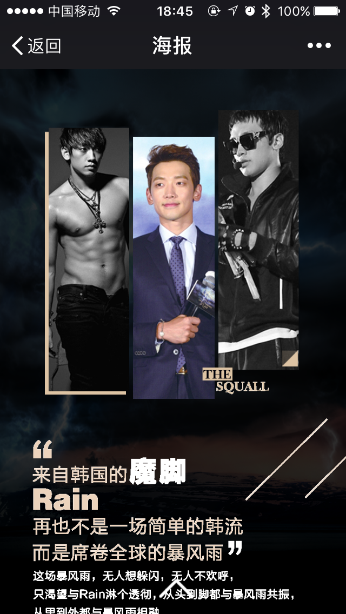

用一双一像素的眼睛看世界
Holle World，我叫陈文博
26岁
一名前端开发工程师
15079016507@163.com
关于我
-
学历/本科
-
经验/1.5年
-
坐标/杭州
-
状态/在职
两年互联网经验,一年半全职前端开发经验
高效的自学能力,具备独立分析解决问题能力
强烈的自我驱动力,代码强迫症患者
工作经历
-
浙江神造科技有限公司
职位：前端开发工程师
工作内容：根据项目需求，制作合适的功能模块，配合后端完成登入、注册、账号找回、微信第三方登入验证功能。完成官网响应式开发，多端适配。
项目：公司官网，移动APP开发、微信小程序，后台管理系统开发
-
火星时代有限公司
职位：前端开发工程师
工作内容：负责产品PC端/移动端/微信端的前端开发和页面制作，对网站前后台的修改和升级，根据网站业务需要开发，制作和程序修改。
项目：H5演唱会宣传、公司webApp开发、电商静态页面重构、
-
项目一
.PNG)
.PNG)
.PNG)
.PNG)
.PNG)
项目：晨见
类型：移动端
状态：以上线
负责：首页、视频、如面、注册、登入、找回等页面搭建交互功能实现和手机端屏幕适配。完成用户注册、登入、找回、点赞。评论、收藏、常用社交转发等功能开发同时参与项目发帖、百度地图API定位开发、第三方视频应用开发、canvas处理相片、项目后台运营管理开发。参与项目策划，需求评审。使用AJAX与后台工作人员进行数据交互，讨论修改不可理数的据结构,使用session Storage/Local Storage/cookies存储非关键信息!使用URL完成页面之间的参数传递。
手机扫码可见
项目二

项目：神造科技官网
类型：PC端
状态：以上线
负责：根据页面要求使用HTML5/CSS3/Javascript相关技术完成官网的页面搭建和人机交互同和响应式多端适配。使用百度地图API实现公司和定位使用AJAX请求本地json文件修改页面数据，使用URL完成页面之间的参数传递。
扫码可见响应式网站
项目五
- 
项目：H5推广宣传海报
类型：移动端
状态：以下线
负责：使用5H+CSS3构建前端页面，使用CSS3的@keyframes动画和animation动画实现页面展示，使用transfrom变形对单个div进行处理， 同时使用了animations.css组件添加动画效果，zepto.js/touch.js实现交互效果。

手机扫码可见